Content Discovery in Exchange
Local Content
-
Exchange Search - You will find the 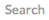 field at the top of every Exchange page. When you type in the field, Exchange will list the Layers, Maps, and Documents that match the text you’ve entered. Select on the word in the list to go to that resource.
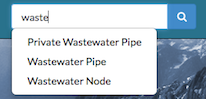
-
Browsing Layers - The Layers page lets you browse data that has been uploaded to this GeoNode. From the Layers page, you can see how many times a layer has been viewed and it’s average user rating. You can also Download the layer data, create a map, or go to a the layer detail page.
-
View by Layer Type - The view in the layers page can be subset by Raster or Vector.
-
Browsing Maps - The Maps page lets you browse data that has been uploaded to this GeoNode. From the Maps page, you can see how many times a map has been viewed and it’s average user rating. You can also Download the layers for the map, view the map, or go to a the map detail page for more information.
-
Filtering Results - There are several different ways to manage the list of the maps, layers or documents you’re viewing. The Layers, Maps and Documents pages provide the ability to filter by categories, date range, or keywords.
-
Filter by Text - Just as the field, Filter by Text will filter the results by text you've entered.
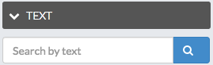
-
Filter by Type (Layers Page Only) - You can filter results by Raster, Remote, Vector and WMS.
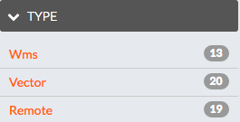
-
Filter by Document Type (Documents Page Only) - You can filter results by a specific Document Type.
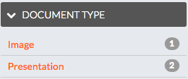
-
Filter by Category - You can filter Layers or Maps by Categories. When the metadata for a layer or a map has been tagged with a specific category, it will be reflected in the Categories panel. Clicking on the first category limits the layer list to those tagged with that category. Clicking on another category adds the layers from that category to the layer list. Clicking on the category again will remove it from the layer list.
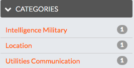
-
Filter by Keywords - You can filter the Layers or Maps associated with a particular keyword. The keywords are saved in the metadata. To edit the keywords for an item you need to go to the Edit Metadata tab for the specific item (map, layer or document).
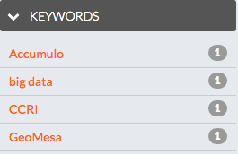
-
Filter by Owners - You can filter the Layers or Maps by a specific user that owns the data.
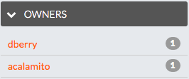
-
Filter by Date - You can limit the list of layers or maps by a date range. In the Date panel select the start date and the end date for the date range. The view will update to reflect those layers or maps that were created within that timeframe.
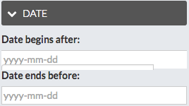
-
Filter by Regions - You can filter also by entering a geographical region.
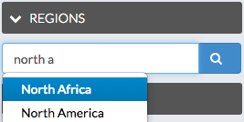
-
Filter by Extent - You can filter by extent using the search overview map.
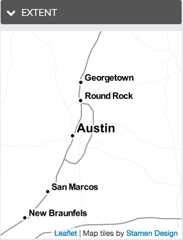
-
Search by CSW
- TODO